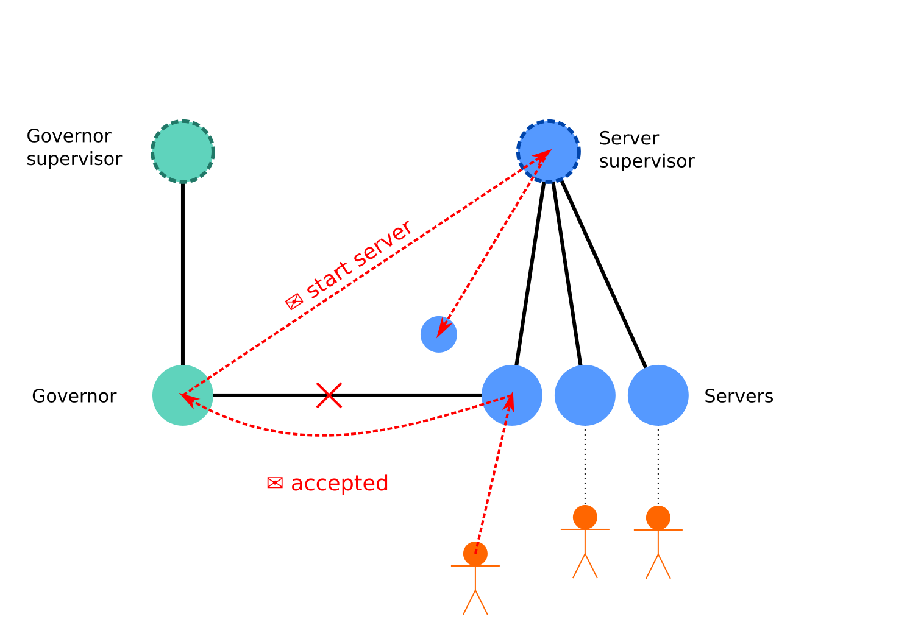

Elixir processes for a Rubyist
To a Ruby developer Elixir can seam like one of an overwhelming selection of trendy new languages. Elixir's lightweight processes mark it as unusual among these new languages, and give it a unique set of strengths. This talk explores the virtues of Elixir processes and demonstrates how to work with them. Finally we will take a deeper dive into a real world example; constructing a capable webserver.
I gave this talk to the London Ruby user group (LRUG).